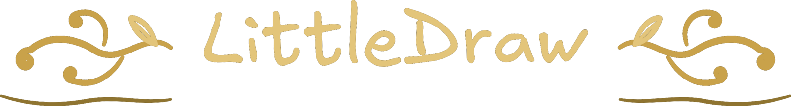

La pizarra de escritorio basada en Excalidraw
Ligera y nativa, sin navegador ni cuentas. Abre y guarda tus archivos .excalidraw en local.
Gratis y de código abierto. Se actualiza solo.


La pizarra de escritorio basada en Excalidraw
Ligera y nativa, sin navegador ni cuentas. Abre y guarda tus archivos .excalidraw en local.
Gratis y de código abierto. Se actualiza solo.
Plano cartesiano, papel cuadriculado y fórmulas, con el mismo trazo a mano.

Un gestor de proyectos con miniaturas, búsqueda y guardado automático. Todo queda en tu equipo, sin cuentas ni nube.

Abre y guarda .excalidraw, conserva lo que no entiende y copia y pega entre ambas.
Escrita en Rust y dibujada directamente en la GPU. Sin Electron ni Chromium.
Desde el editor con Ctrl + Shift + E, desde el gestor o desde la terminal.
Cambia con Alt + Shift + D; tus dibujos no se modifican.
LittleDraw.AppImage.chmod +x LittleDraw.AppImageLittleDraw-win-Setup.exe.Las versiones nuevas se descargan solas en segundo plano y se instalan al cerrar la aplicación.